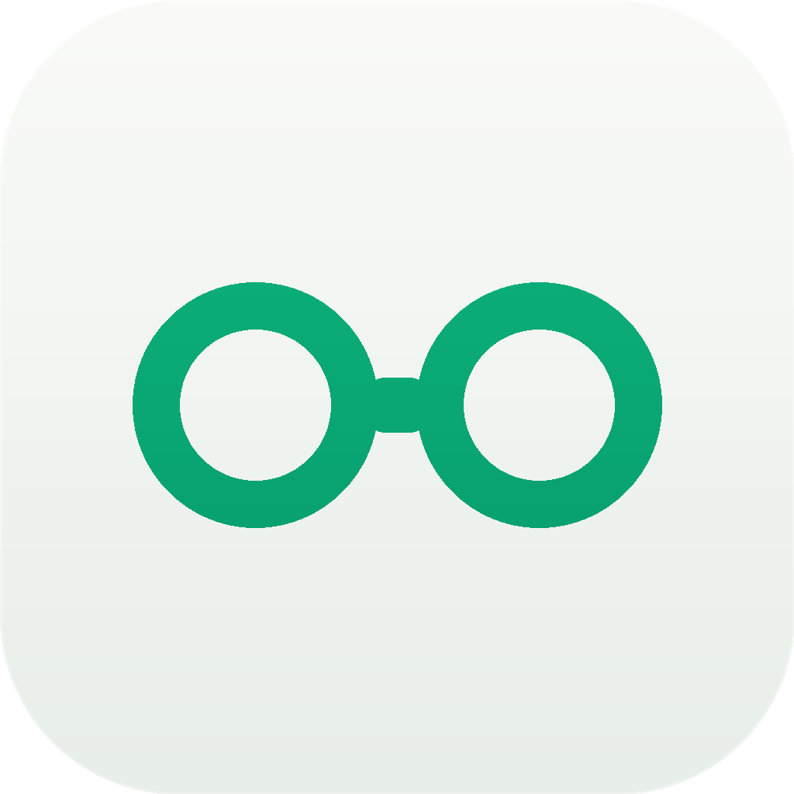
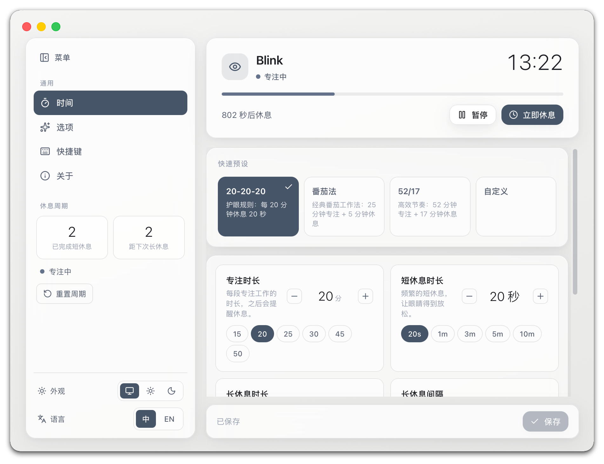
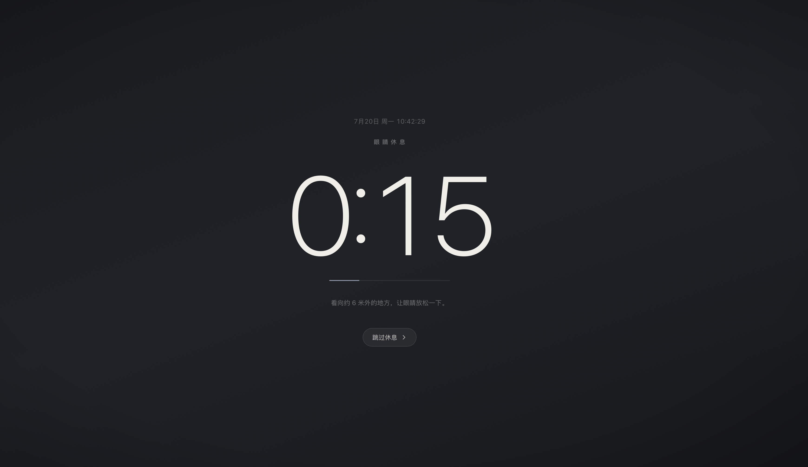
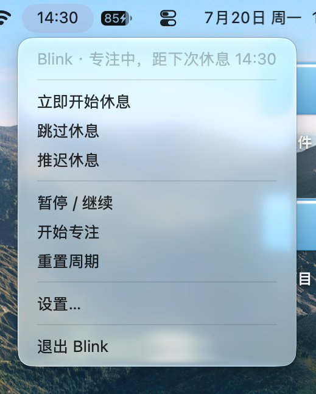

🧭
首次引导
启动先带你完成设置，按「开始专注」才正式计时，绝不冷不丁弹窗。

BlinkmacOS 菜单栏 · 护眼提醒
基于眼科医生推荐的 20-20-20 规则：每用屏 20 分钟，看 20 英尺外 20 秒。 Blink 默默计时，到点温柔提醒你抬起头——你只管跟着做，其余交给它。

不是又一个弹窗骚扰工具，而是一位安静的护眼搭子。
启动先带你完成设置，按「开始专注」才正式计时，绝不冷不丁弹窗。
菜单栏图标旁显示距下次休息还剩多久，节奏尽在掌握。
专注 → 预警 → 休息，频繁短休息穿插偶尔长休息，不割裂心流。
覆盖所有显示器，大号倒计时 + 提示音，多屏也逃不掉。
人离开就暂停，回来继续；系统休眠后自动恢复，只在你工作时提醒。
开始 / 跳过 / 推迟 / 设置，手不离键盘随心掌控。
时长、频率、快捷键、外观、语言，一切你说了算。
默认跟随系统语言，菜单栏与界面同步本地化，随时切换。
沉静的石板灰设计，倒计时数字才是主角。


设计风格：Slate 石板灰体系 —— 单色无渐变，沉稳不打扰。